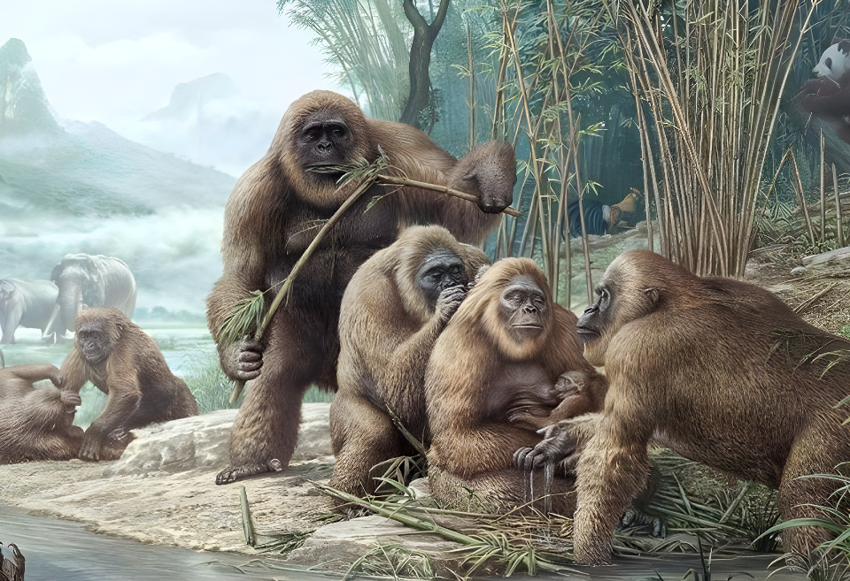
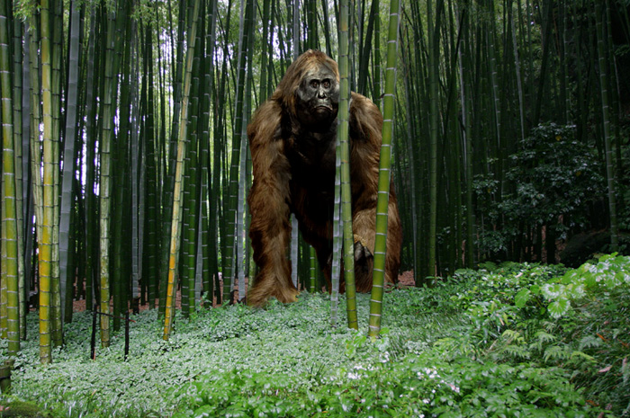
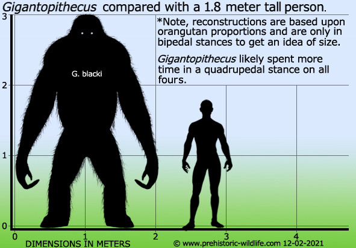
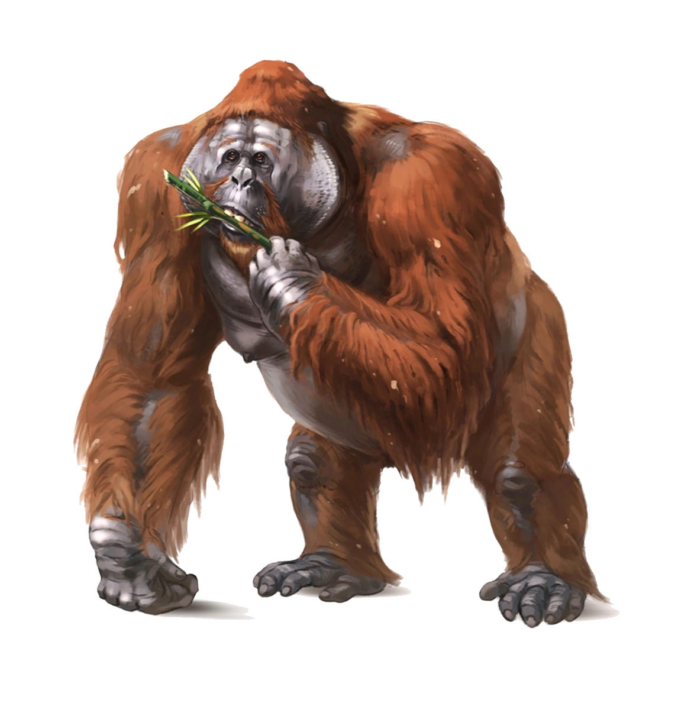
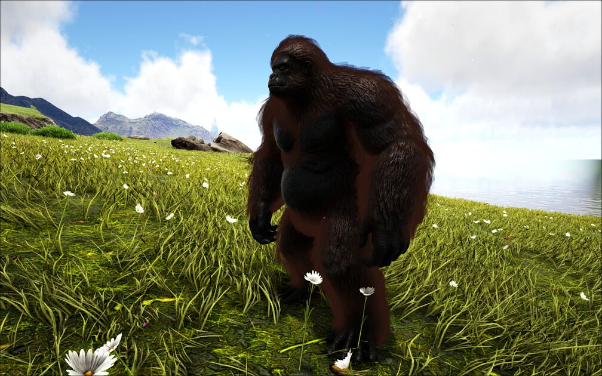
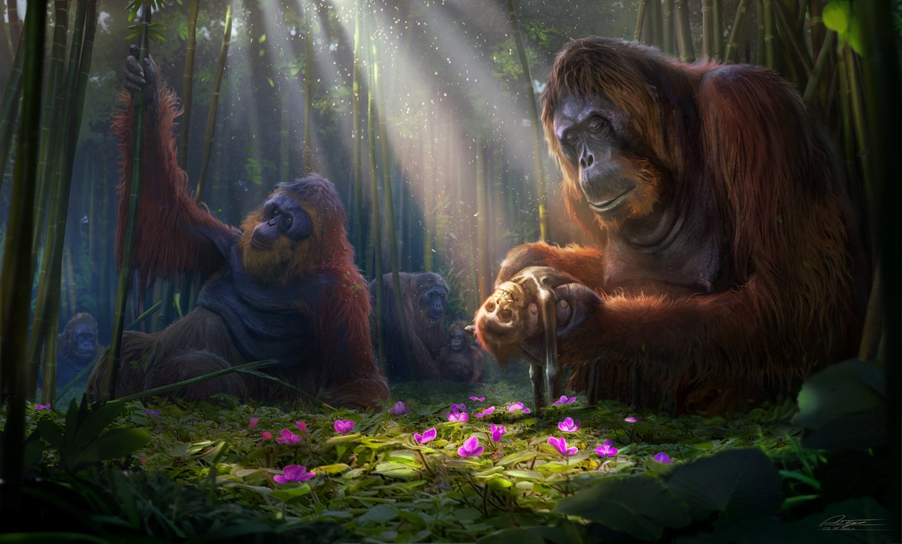
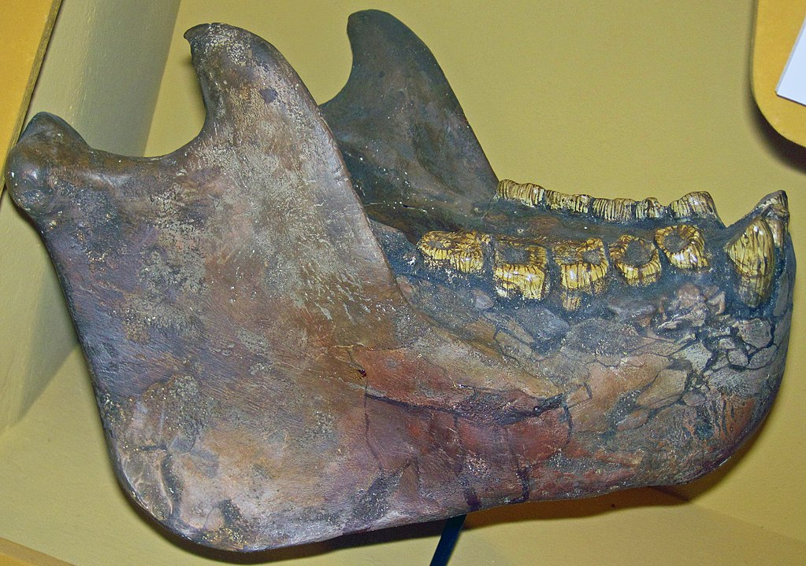

Gigantopithecus
King Kong bản gốc thế Trung Tân
Tổng quan
Thế
Miocene
Họ
Hominidae
Chi
Gigantopithecus
Cao
3 m
Nặng
540 kg
Thức ăn

Gigantopithecus là một chi vượn người tồn tại từ 9 triệu năm trước đây cho đến 100.000 năm trước đây, ở khu vực ngày nay là Trung Quốc, Ấn Độ và Việt Nam, có nghĩa rằng Gigantopithecus sống cùng thời kỳ và vị trí với những dạng người sớm như Homo Erectus (người đứng thẳng).
Nguồn: wikipedia.org
Phân bố
Khu vực Đông Nam Á
Thông tin thêm về Gigantopithecus
Kỷ nguyên và phân bố
Gigantopithecus từng sống lang thang trong những khu rừng ở Trung Quốc, Ấn Độ và Việt Nam thuộc Đông Nam Á trước khi tuyệt chủng, cùng thời với các loại vượn hình người khác, cách đây khoảng từ 9 triệu đến 100 nghìn năm trước.
Tên khoa học
Được đặt tên bởi nhà cổ sinh vật học Gustav Heinrich Ralph von Koenigswald năm 1935. Gigantopithecus có nghĩa là "Vượn khổng lồ", đề cập đến kích thước của chúng. Loài điển hình, Gigantopithecus Blacki.
Kích thước
Gigantopithecus là một sinh vật rất to lớn, to hơn nhiều những loài vượn lớn còn sống ngày nay, một con đực có thể cao khoảng từ 3 dến 4 mét khi đứng thẳng và nặng từ 500 tới 540 kg.
Ngoại hình
Phương thức di chuyển của Gigantopithecus hiện vẫn chưa rõ, do người ta vẫn chưa tìm thấy xương chậu hay xương chân của chúng. Quan điểm thiểu số vẫn cho rằng có lẽ chúng đi bằng bốn chân và trông giống như khỉ đột và tinh tinh ngày nay.
Tuy nhiên, vẫn có giả thuyết khác cho rằng chúng đi bằng 2 chân, quan điểm này dựa trên một số ít di cốt quai hàm đã được tìm thấy, tất cả chúng đều có hình dạng chữ U và mở rộng ra về phía sau, tạo ra không gian để khí quản nằm hoàn toàn bên trong quai hàm, cho phép hộp sọ nằm vuông góc trên cột sống hoàn toàn thẳng đứng như ở người hiện đại.
Chế độ ăn
Các răng hàm trước rộng và phẳng, có cấu hình tương tự như các răng hàm trong. Các răng nanh không nhọn mà cũng chẳng sắc, trong khi các răng cửa thì nhỏ, giống như cái chốt và mọc khít vào nhau. Các đặc trưng của quai hàm và răng của Gigantopithecus gợi ý rằng chúng đã thích nghi với việc nhai những thức ăn dai, nhiều sợi bằng cách cắt, nghiền nát và nghiền nhỏ nó. Răng của Gigantopithecus cũng có nhiều lỗ rỗng, tương tự như ở gấu trúc lớn, loài với nguồn thức ăn chủ yếu là tre trúc, và điều đó gợi ý rằng nguồn thức ăn của Gigantopithecus cũng có thể là tương tự.
Ngoài tre trúc ra, Gigantopithecus còn ăn các loại thức ăn thực vật khác, như gợi ý từ phân tích các loại thực kết thạch bám vào răng của chúng. Việc kiểm tra các vết xước vi thể và các dấu tích sạn thực vật bám vào răng Gigantopithecus gợi ý rằng chúng còn ăn cả hạt và hoa quả.
Khám phá
Hóa thạch đầu tiên được một nhà nhân chủng học - Ralph von Koenigswald phát hiện vào năm 1935. Điều khó tin là ông đã tìm được chúng trong một nhà thuốc Trung Quốc. Răng và xương được nghiền thành bột và được sử dụng làm thuốc Đông y cổ truyền. Răng hàm và một số hàm đã được lấy từ cửa hàng với các loại thuốc truyền thống. Một số hóa thạch Gigantopithecus đã được tìm thấy ở Ấn Độ và Việt Nam.
Khi mô tả nó như một chi mới, việc lựa chọn tên là hiển nhiên và vì vậy von Koenigswald đã tạo ra Gigantopithecus với nghĩa đen là 'vượn khổng lồ'. Kể từ lần khám phá đầu tiên, hơn một nghìn ba trăm chiếc răng đã được truy tìm, rất nhiều trong số đó là từ chợ Y học cổ truyền Trung Quốc. Gigantopithecus có thể trông như thế nào Thật không may, đây là nơi các manh mối dừng lại vì không có phần nào khác của bộ xương hoặc thậm chí hộp sọ được tìm thấy cho đến nay.
"King Kong bản gốc"
Nhiều nhà nghiên cứu đã đặc biệt danh cho Gigantopithecus là "King Kong bản gốc". Các nhà làm phim Hollywood cũng lấy cảm hứng từ loài linh trưởng khổng lồ Gigantopithecus này để xây dựng hình tượng "King Kong" cho các tác phẩm điện ảnh của họ, có thể kể đến như là bộ phim Jungle Book (Cậu bé rừng xanh) của Disney với nhân vật Vua khỉ Louie, hoặc tác phẩm khoa học viễn tưởng King Kong (2005), và gần đây là loạt phim về Kaiju những sinh vật cổ xưa khổng lồ trong Godzilla đại chiến Kong (2021).